Люблю фотографировать. Порой получается неплохо :-) Если и вам нравится, то с удовольствием пофотографирую вашего кеесхонда :-)
Большинство фотографий на сайте - моих рук дело.
В ближайшее время постараюсь сделать подборку из фотографий :-)
C 2009 года мы совместно с Камыниным Алексеем ведем портал "Шпиц - мой друг". На сайте создан породный каталог представителей породы. Сейчас в базе более 16000 шпицев. Всегда с благодарностью принимаем как новых участников каталога, так и пожелания, замечания и предложения по работе сайта.
Буду рада помочь с созданием сайта, форума, интернет-магазина или интернет-каталога.
Дизайн, верстка, поддержка, идеи:
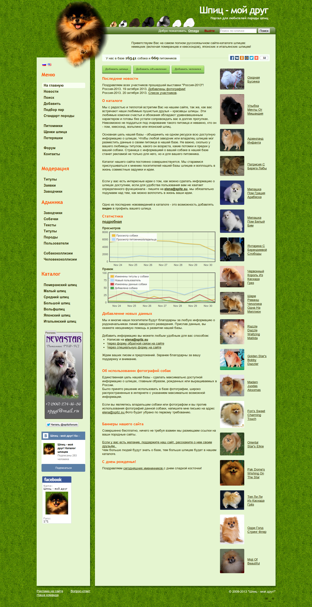
Сайт, каталог шпицев
http://spitz.su/
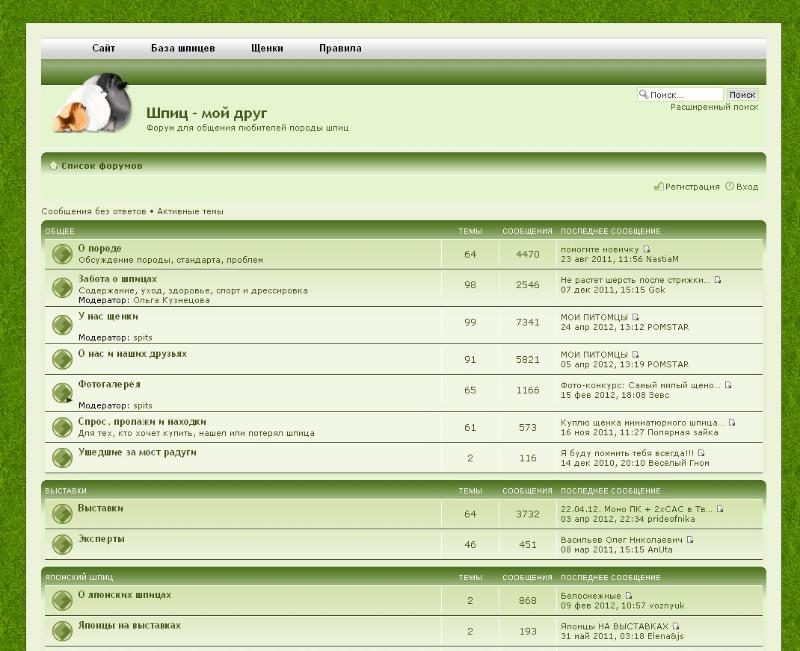
Форум шпицев
http://forum.spitz-forum.ru/
Дизайн, верстка, идеи, администрирование сайта на Bitrix:
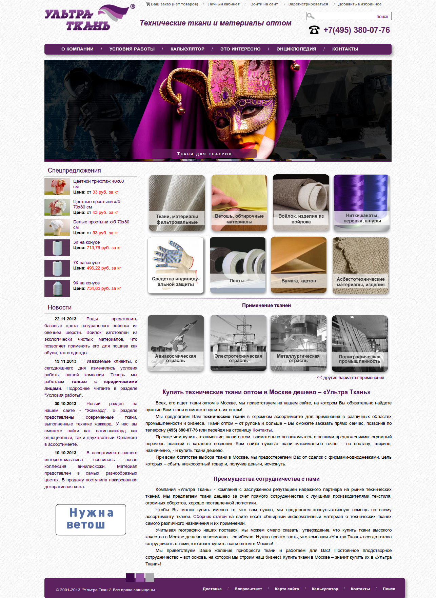
Интернет-магазин технических тканей
http://ultratkan.ru/
Дизайн, верстка, создание сайта на jekyll и ведение сайта:
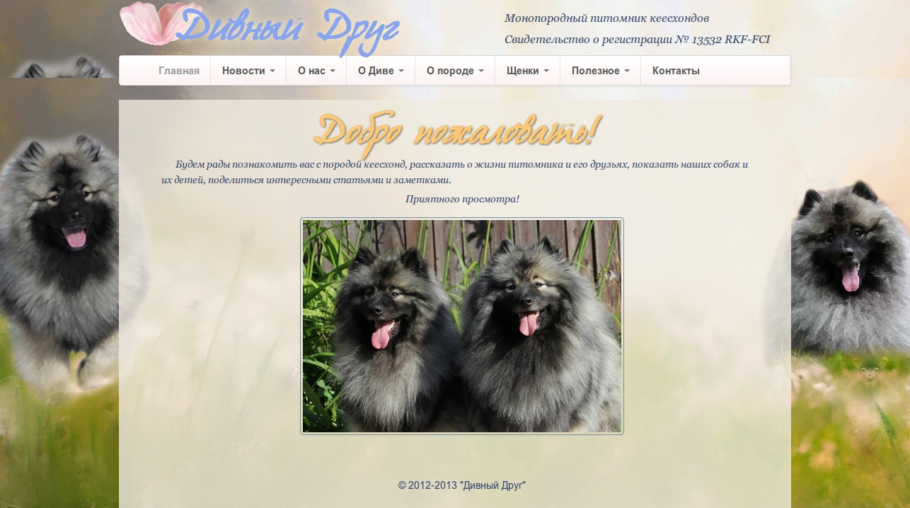
Сайт питомника Дивный Друг
http://keeshond-kennel.com/
Создание сайта на bubujka, верстка, поддержка:
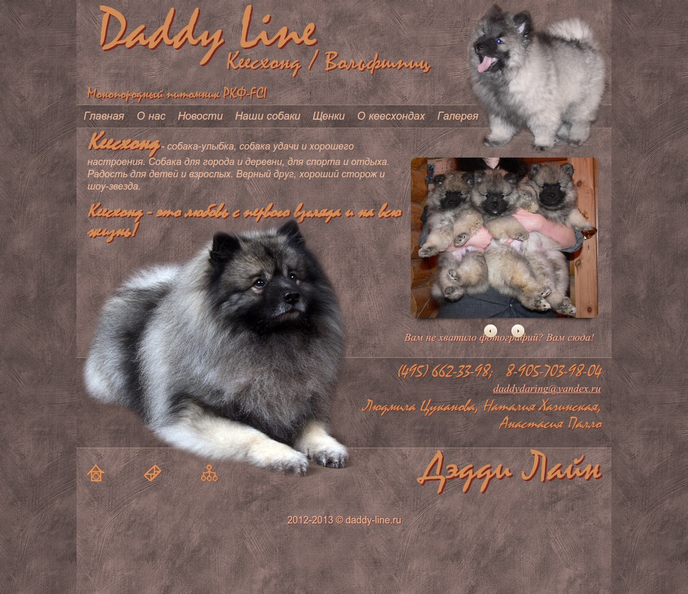
Сайт питомника Дэдди Лайн
http://daddy-line.ru/
Дизайн, верстка, постановка на Joomla:
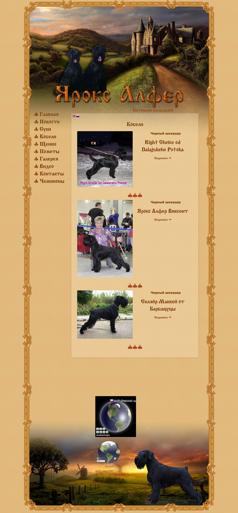
Сайт питомника Ярокс Алфер
http://jaroks-alfer.ru/
Дизайн, верстка, постановка на Joomla и наполнение сайта:
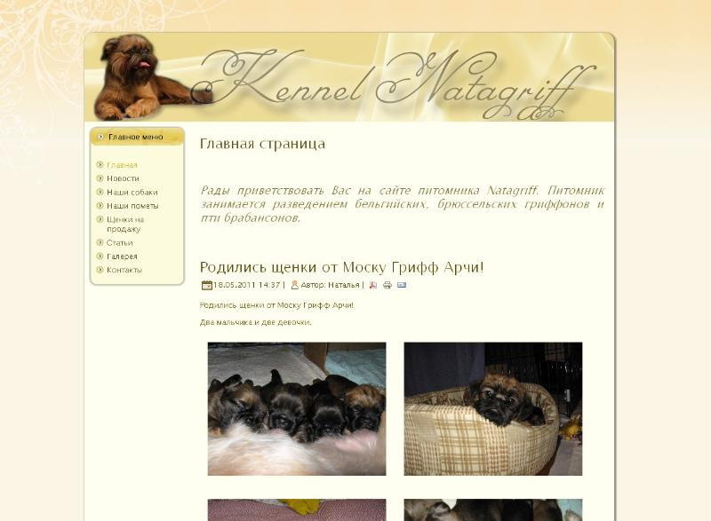
Сайт питомника Натагрифф
http://natagriff.com/
Верстка и создание интернет-магазина:
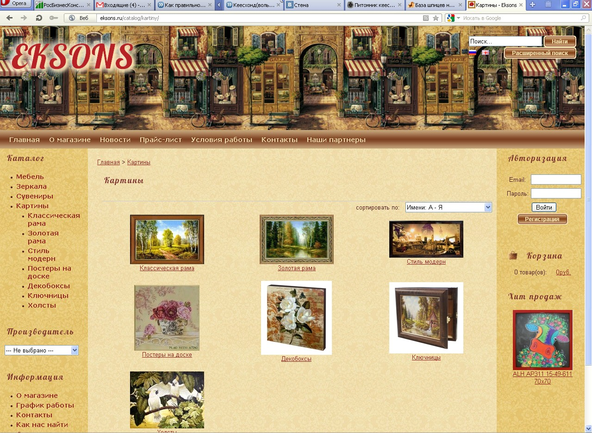
Интернет-магазин репродукций
http://eksons.ru/
Дизайн, верстка, создание сайта:
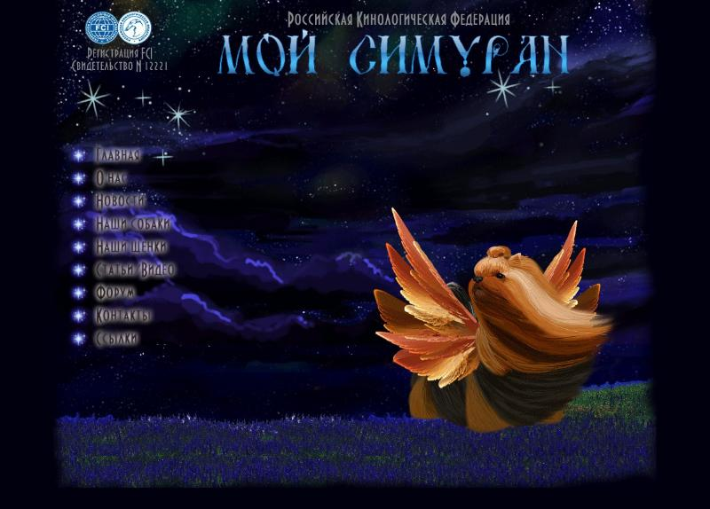
Сайт питомника Мой Симуран
http://mysimuran.ru/
Дизайн, верстка, постановка на Joomla и наполнение сайта:
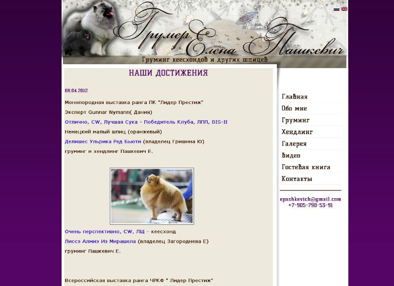
Сайт Елены Пашкевич
http://grooming-keeshond.ru/
Дизайн, верстка, постановка на Joomla и наполнение сайта:
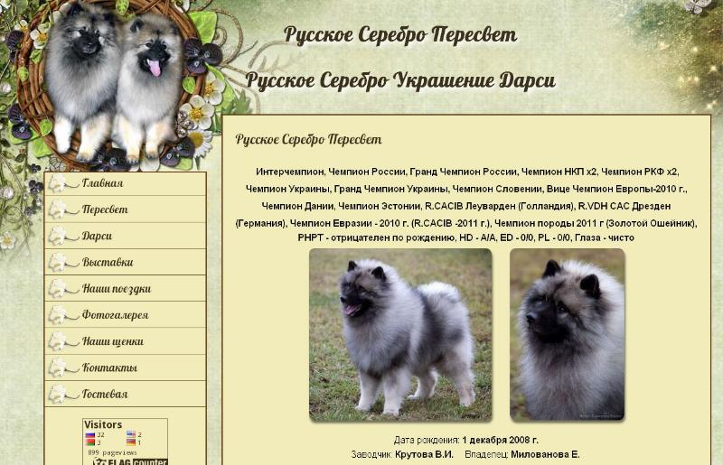
Сайт кеесхондов Русское Серебро Пересвет и Русское Серебро Украшение Дарси
http://keeshond-peresvet-darsi.ru/
Верстка и постановка сайта на CMSMS:
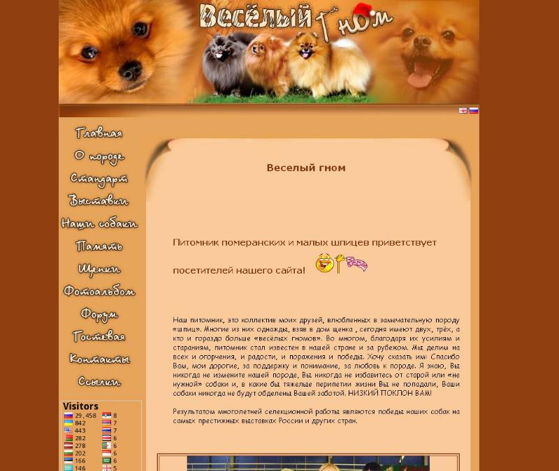
Сайт питомника Веселый Гном
http://spitz-vesgnom.ru/
Дизайн, верстка, постановка на Joomla и наполнение сайта:
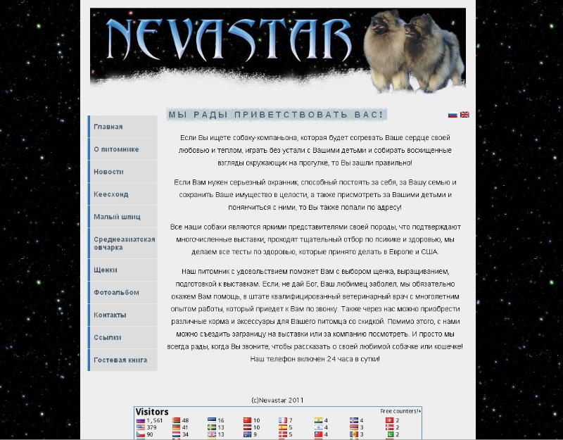
Сайт питомника Невастар
http://nevastar.org/
Дизайн, верстка, создание интернет-магазина:
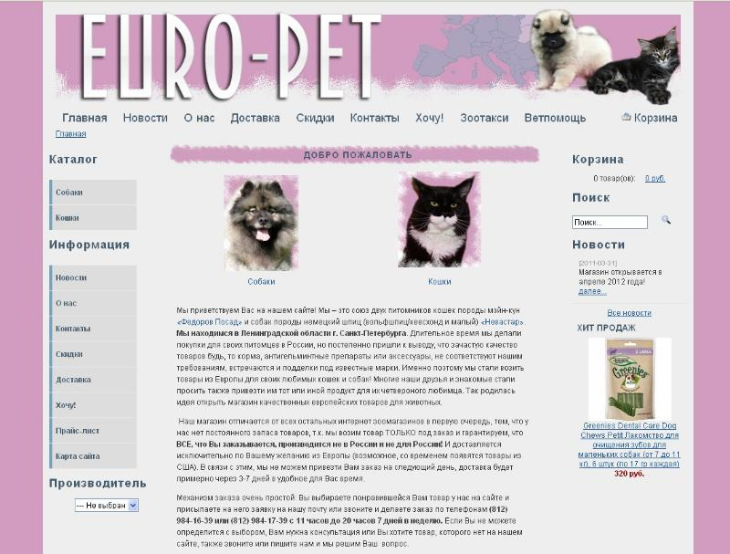
Интернет-магазин товаров для домашних животных
http://euro-pet.ru/
Дизайн, верстка, создание базы бишон фризе:
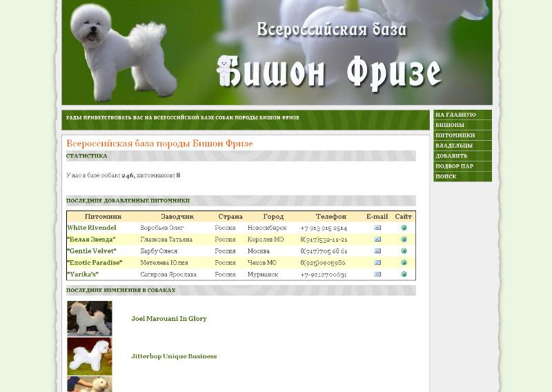
Каталог Бишон Фризе
http://бишон-база.рф/
Дизайн, верстка, создание базы канарских догов:
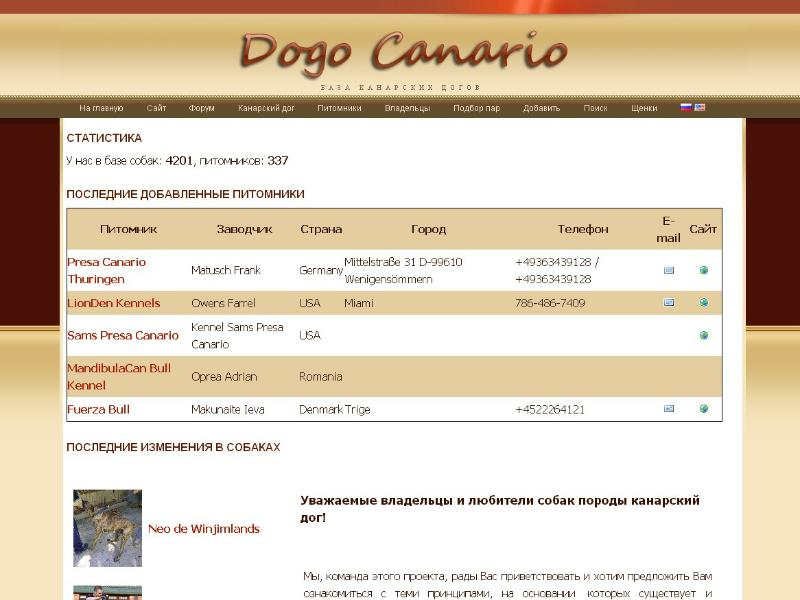
Каталог канарских догов
http://pedigree.clubdogocanario.ru/
Верстка и создание интернет-магазина, дизайн и создание форума:
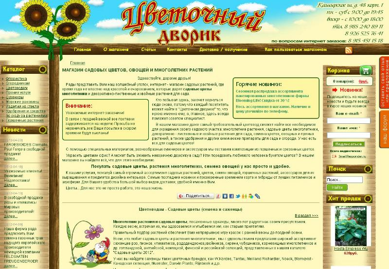
Интернет-магазин
http://cvetdvor.ru/
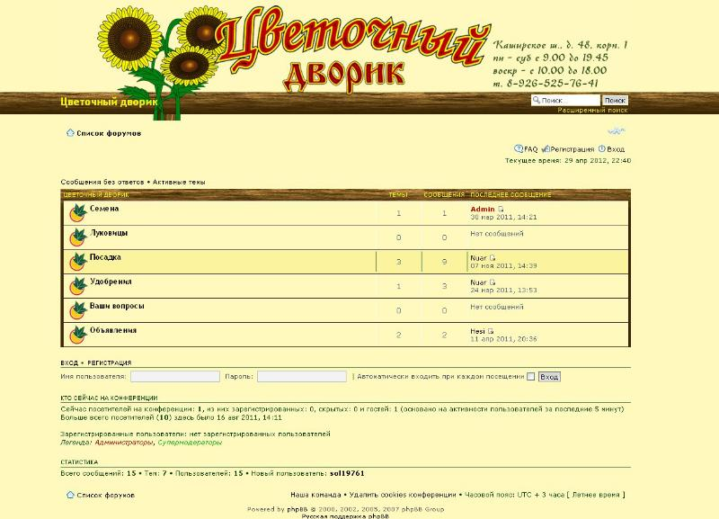
Форум
http://cvetdvor.ru/forum
Верстка сайта:
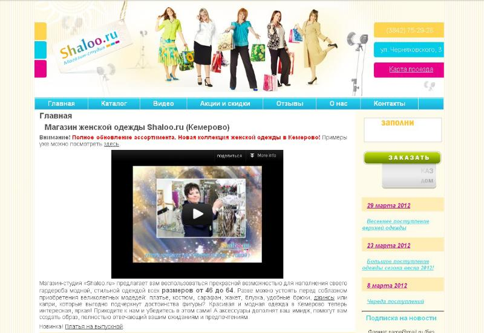
Сайт
http://www.shaloo.ru/
Постановка сайта на Joomla:
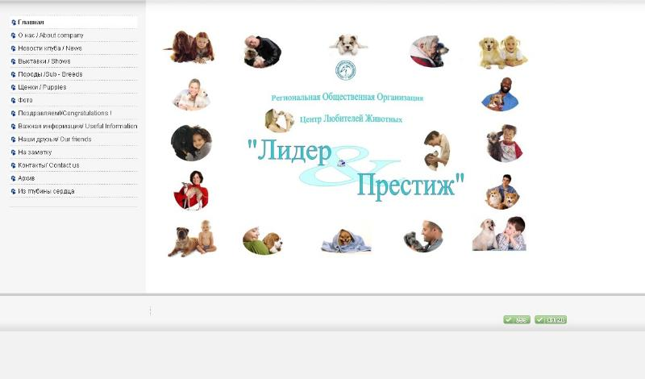
Сайт ЦЛЖ "Лидер-Престиж"
http://www.lider-prestig.ru/
{kind=link}
{kind=link}
{kind=link}
{kind=link}
{kind=link}
{kind=link}
{kind=link}
{kind=link}
{kind=link}
{kind=link}
{kind=link}
{kind=link}
{kind=link}
{kind=link}
{kind=link}
{kind=link}
{kind=link}
{kind=link}
{kind=link}
{kind=link}